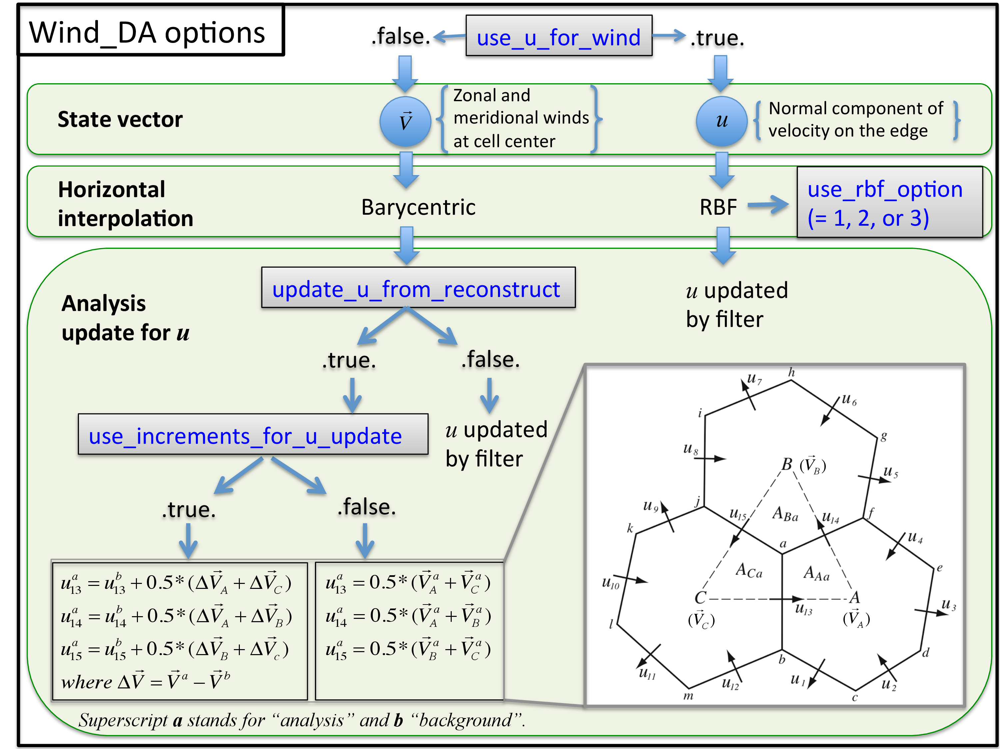

DART Documentation Main Index
version information for this file:
$Id$
|
|
DART Documentation Main Index |
This document describes the DART interface module for the MPAS-Atmosphere (or briefly, MPAS-ATM) global model, which uses an unstructured Voronoi grid mesh, formally Spherical Centriodal Voronoi Tesselations (SCVTs). This allows for both quasi-uniform discretization of the sphere and local refinement. The MPAS/DART interface was built on the SCVT-dual mesh and does not regrid to regular lat/lon grids. In the C-grid discretization, the normal component of velocity on cell edges is prognosed; zonal and meridional wind components are diagnosed on the cell centers. We provide several options to choose from in the assimilation of wind observations as shown below.
The grid terminology used in MPAS is as shown in the figure below:

The wind options during a DART assimilation are controlled by combinations of 4 different namelist values. The values determine which fields the forward operator uses to compute expected observation values; how the horizontal interpolation is computed in that forward operator; and how the assimilation increments are applied to update the wind quantities in the state vector. Preliminary results based on real data assimilation experiments indicate that performance is better when the zonal and meridional winds are used as input to the forward operator that uses Barycentric interpolation, and when the prognostic u wind is updated by the incremental method described in the figure below. However there remain scientific questions about how best to handle the wind fields under different situations. Thus we have kept all implemented options available for use in experimental comparisons. See the figure below for a flow-chart representation of how the 4 namelist items interact:
Cycling of MPAS/DART is run in a restart mode. As for all DART experiments, the overall design for an experiment is this: the DART program filter will read the initial condition file, the observation sequence file, and the DART namelist to decide whether or not to advance the MPAS-ATM model. All of the control of the execution of the MPAS model is done by DART directly. If the model needs to be advanced, filter makes a call to the shell to execute the script advance_model.csh, which is ENTIRELY responsible for getting all the input files, data files, namelists, etc. into a temporary directory, running the model, and copying the results back to the parent directory (which we call CENTRALDIR). The whole process hinges on setting the MPAS-ATM model namelist values such that it is doing a restart for every model advance. Unlike MPAS-ATM free forecast runs, the forecast step in MPAS/DART requires to set up one more namelist parameter called "config_do_DAcycling = .true." in &restart section of namelist.input to recouple the state vectors (updated by filter) with the mass field for the restart mode. For more information, check the advance_model.csh script.
Since DART is an ensemble algorithm, there are multiple analysis files for a single analysis time: one for each ensemble member. Because MPAS/DART is run in a restart mode, each member should keep its own MPAS restart file from the previous cycle (rather than having a single template file in CENTRALDIR). Creating the initial ensemble of states is an area of active research.
This namelist is read from the file input.nml. Namelists start with an ampersand '&' and terminate with a slash '/'. Character strings that contain a '/' must be enclosed in quotes to prevent them from prematurely terminating the namelist.
&model_nml model_analysis_filename = 'mpas_init.nc', grid_definition_filename = 'mpas_init.nc', output_state_vector = .false., vert_localization_coord = 3, assimilation_period_days = 0, assimilation_period_seconds = 21600, model_perturbation_amplitude = 0.0001, log_p_vert_interp = .true., calendar = 'Gregorian', use_u_for_wind = .false., use_rbf_option = 2, update_u_from_reconstruct = .true., use_increments_for_u_update = .true., highest_obs_pressure_mb = 100.0, sfc_elev_max_diff = -1.0, debug = 0, /
| Item | Type | Description |
|---|---|---|
| model_analysis_filename | character(len=256) [default: 'mpas_init.nc'] |
The name of the MPAS analysis file to be read and/or written by the DART programs for the state data. |
| grid_definition_filename | character(len=256) [default: 'mpas_init.nc'] |
The name of the MPAS file to be read by the DART programs for the grid information. Generally this is the same as the model_analysis_filename. However, the grid information is large and if the grid is static that information could be omitted from the analysis files to save space. A single grid file could be supplied once and not change during the assimilation run. |
| highest_obs_pressure_mb | real(r8) [default: 100.0] |
Observations higher than this pressure are ignored. Set to -1.0 to ignore this test. For models with a prescribed top boundary layer, trying to assimilate very high observations results in problems because the model damps out any changes the assimilation tries to make. With adaptive algorithms this results in larger and larger coefficients as the assimilation tries to effect state vector change. |
| output_state_vector | logical [default: .false.] | The switch to determine the form of the state vector in the output netCDF files. If .true. the state vector will be output exactly as DART uses it; as one long array. If .false., the state vector is parsed into prognostic variables and output that way -- much easier to use with 'ncview', for example. [Recommended] |
| assimilation_period_days | integer [default: 0] | The number of days to advance the model for each assimilation. Even if the model is being advanced outside of the DART filter program, the assimilation period should be set correctly. Only observations with a time within +/- 1/2 this window size will be assimilated. |
| assimilation_period_seconds | integer [default: 21600] | In addition to assimilation_period_days, the number of seconds to advance the model for each assimilation. |
| vert_localization_coord | integer [default: 3] | Vertical coordinate for vertical localization.
|
| sfc_elev_max_diff | real(r8)[default: -1.0] | If > 0, the maximum difference, in meters, between an observation marked as a 'surface obs' as the vertical type (with the surface elevation, in meters, as the numerical vertical location), and the surface elevation as defined by the model. Observations further away from the surface than this threshold are rejected and not assimilated. If the value is negative, this test is skipped. |
| log_p_vert_interp | logical [default: .true.] | If .true., vertical interpolation is done in log-pressure. Otherwise, linear. |
| use_u_for_wind | logical [default: .false.] | If .false., zonal and meridional winds at cell centers are used for the wind observation operator [default]. In that case, triangular meshes are used for the barycentric (e.g., area-weighted) interpolation. If .true., wind vectors at an arbitrary (e.g., observation) point are reconstructed from the normal component of velocity on cell edges (u) using radial basis functions (RBFs) provided by the MPAS model. |
| use_rbf_option | integer [default: 2] | If use_u_for_wind is .true., this option controls how many points will be used in the RBF interpolation. Options are available as 1, 2, and 3. All the edges available in N (= 1,2, or 3) cells go into the RBF reconstruction. |
| update_u_from_reconstruct | logical [default: .true.] | When zonal and meridional winds at cell centers are used for the wind observation operator (use_u_for_wind = .false.), this option decides if the normal component of velocity on cell edges (which is the only wind prognostic variable in MPAS-ATM) should be updated from the winds at cell centers. If .true., use_increments_for_u_update should be also decided. If use_u_for_wind = .true. and the normal component of velocity on cell edges is defined as a state vector, this option should be .false. so the edge winds can be directly updated by filter. |
| use_increments_for_u_update | logical [default: .true.] | Only if update_u_from_reconstruct is .true., this option is used to decide if the edge winds are replaced by averaging from the analysis winds at cell centers (.false.), or just updated by the analysis increments at cell centers (.true.). If .true., all the wind components (e.g., both at cell centers and edges) are read from prior and used to compute the increments [Recommended]. |
| model_perturbation_amplitude | real(r8) [default: 0.0001] | The amplitude of random noise to add when trying to perturb a single state vector to create an ensemble. Only used when input.nml::&filter_nml:start_from_restart = .false. Multiplied by the state vector, it produces standard deviation of a gaussian distribution with the mean at the value of the state vector element. |
| calendar | character(len=32) [default: 'Gregorian'] |
Character string specifying the calendar being used by MPAS. |
| debug | integer [default: 0] | The switch to specify the run-time verbosity. 0 is as quiet as it gets. > 1 provides more run-time messages. > 5 provides ALL run-time messages. |
The &mpas_vars_nml namelist contains the list of MPAS variables that make up the DART state vector. The order the items are specified controls the order of the data in the state vector, so it should not be changed without regenerating all DART initial condition or restart files. These variables are directly updated by the filter assimilation.
Any variables whose values cannot exceed a given minimum or maximum can be listed in mpas_state_bounds. When the data is written back into the MPAS NetCDF files values outside the allowed range will be detected and changed. Data inside the DART state vector and data written to the DART diagnostic files will not go through this test and values may exceed the allowed limits. Note that changing values at the edges of the distribution means it is no longer completely gaussian. In practice this technique has worked effectively, but if the assimilation is continually trying to move the values outside the permitted range the results may be of poor quality. Examine the diagnostics for these fields carefully when using bounds to restrict their values.
&mpas_vars_nml
mpas_state_variables = 'theta', 'KIND_POTENTIAL_TEMPERATURE',
'uReconstructZonal', 'KIND_U_WIND_COMPONENT',
'uReconstructMeridional','KIND_V_WIND_COMPONENT',
'qv', 'KIND_VAPOR_MIXING_RATIO',
'qc', 'KIND_CLOUDWATER_MIXING_RATIO',
'surface_pressure', 'KIND_SURFACE_PRESSURE'
mpas_state_bounds = 'qv','0.0','NULL','CLAMP',
'qc','0.0','NULL','CLAMP',
/
| Item | Type | Description |
|---|---|---|
| mpas_vars_nml | character(len=NF90_MAX_NAME):: dimension(160) | The table that both specifies which MPAS-ATM variables will be placed in the state vector, and also relates those variables to the corresponding DART kinds. The first column in each pair must be the exact NetCDF name of a field in the MPAS file. The second column in each pair must be a KIND known to the DART system. See obs_kind/obs_kind_mod.f90 for known names. This file is autogenerated when DART builds filter for a particular model, so run quickbuild.csh in the work directory first before examining this file. Use the generic kind list in the obs_kind_mod tables, not the specific type list. |
| mpas_state_bounds | character(len=NF90_MAX_NAME):: dimension(160) | List only MPAS-ATM variables that must restrict their values to remain between given lower and/or upper bounds. Columns are: NetCDF variable name, min value, max value, and action to take for out-of-range values. Either min or max can have the string 'NULL' to indicate no limiting will be done. If the action is 'CLAMP' out of range values will be changed to the corresponding bound and execution continues; 'FAIL' stops the executable if out of range values are detected. |
As the forward operators use the unstructured grid meshes in MPAS-ATM, the DART/MPAS interface needs to read static variables related to the grid structure from the MPAS ATM 'history' file (specified in model_analysis_filename). These variables are used to find the closest cell to an observation point in the cartesian coordinate (to avoid the polar issues).
| integer :: nCells | the number of cell centers |
| integer :: nEdges | the number of cell edges |
| integer :: nVertices | the number of cell vertices |
| integer :: nVertLevels | the number of vertical levels for mass fields |
| integer :: nVertLevelsP1 | the number of vertical levels for vertical velocity |
| integer :: nSoilLevels | the number of soil levels |
| real(r8) :: latCell(:) | the latitudes of the cell centers [-90,90] |
| real(r8) :: lonCell(:) | the longitudes of the cell centers [0, 360] |
| real(r8) :: latEdge(:) | the latitudes of the edges [-90,90], if edge winds are used. |
| real(r8) :: lonEdge(:) | the longitudes of the edges [0, 360], if edge winds are used. |
| real(r8) :: xVertex(:) | The cartesian location in x-axis of the vertex |
| real(r8) :: yVertex(:) | The cartesian location in y-axis of the vertex |
| real(r8) :: zVertex(:) | The cartesian location in z-axis of the vertex |
| real(r8) :: xEdge(:) | The cartesian location in x-axis of the edge, if edge winds are used. |
| real(r8) :: yEdge(:) | The cartesian location in y-axis of the edge, if edge winds are used. |
| real(r8) :: zEdge(:) | The cartesian location in z-axis of the edge, if edge winds are used. |
| real(r8) :: zgrid(:,:) | geometric height at cell centers (nCells, nVertLevelsP1) |
| integer :: CellsOnVertex(:,:) | list of cell centers defining a triangle |
| integer :: edgesOnCell(:,:) | list of edges on each cell |
| integer :: verticesOnCell(:,:) | list of vertices on each cell |
| integer :: edgeNormalVectors(:,:) | unit direction vectors on the edges (only used if use_u_for_wind = .true.) |
input.nml :: &mpas_vars_nml defines the list of MPAS variables used to build the DART state vector. Combined with an MPAS analysis file, the information is used to determine the size of the DART state vector and derive the metadata. To keep track of what variables are contained in the DART state vector, an array of a user-defined type called "progvar" is available with the following components:
type progvartype private character(len=NF90_MAX_NAME) :: varname character(len=NF90_MAX_NAME) :: long_name character(len=NF90_MAX_NAME) :: units character(len=NF90_MAX_NAME), dimension(NF90_MAX_VAR_DIMS) :: dimname integer, dimension(NF90_MAX_VAR_DIMS) :: dimlens integer :: xtype ! netCDF variable type (NF90_double, etc.) integer :: numdims ! number of dimensions - excluding TIME integer :: numvertical ! number of vertical levels in variable integer :: numcells ! number of cell locations (typically cell centers) integer :: numedges ! number of edge locations (edges for normal velocity) logical :: ZonHalf ! vertical coordinate for mass fields (nVertLevels) integer :: varsize ! variable size (dimlens(1:numdims)) integer :: index1 ! location in dart state vector of first occurrence integer :: indexN ! location in dart state vector of last occurrence integer :: dart_kind character(len=paramname_length) :: kind_string logical :: clamping ! does variable need to be range-restricted before real(r8) :: range(2) ! lower and upper bounds for the data range. logical :: out_of_range_fail ! is out of range fatal if range-checking? end type progvartype type(progvartype), dimension(max_state_variables) :: progvar
The variables are simply read from the MPAS analysis file and stored in the DART state
vector such that all quantities for one variable are stored contiguously. Within each
variable; they are stored vertically-contiguous for each horizontal location. From a storage
standpoint, this would be equivalent to a Fortran variable dimensioned
x(nVertical,nHorizontal,nVariables). The fastest-varying dimension is vertical,
then horizontal, then variable ... naturally, the DART state vector is 1D.
Each variable is also stored this way in the MPAS analysis file.
The DART interface for MPAS-ATM can be compiled with various fortran compilers such as (but not limited to) gfortran, pgf90, and intel. It has been tested on a Mac and NCAR IBM supercomputer (yellowstone).
NOTE: While MPAS requires the PIO (Parallel IO) and pNetCDF (Parallel NetCDF) libraries, DART uses only the plain NetCDF libraries. If an altered NetCDF library is required by the parallel versions, there may be incompatibilities between the run-time requirements of DART and MPAS. Static linking of one or the other executable, or swapping of modules between executions may be necessary.
is relatively straightforward. Given the namelist mechanism for
determining the state variables and the MPAS history netCDF
files exist, - everything that is needed is readily determined.
There are two programs - both require the list of MPAS variables
to use in the DART state vector: the
mpas_vars_nml namelist in the
input.nml file. The MPAS file name being
read and/or written is - in all instances - specified by the
model_nml:model_analysis_filename variable in the
input.nml namelist file.
| model_to_dart.f90 | converts an MPAS analysis file (nominally named mpas_init.nc) into a DART-compatible file normally called dart_ics . We usually wind up linking the actual analysis file to a static name that is used by DART. |
| dart_to_model.f90 | inserts the DART output into an existing MPAS analysis netCDF file by overwriting the variables in the analysis netCDF file. There are two different types of DART output files, so there is a namelist option to specify if the DART file has two time records or just one (if there are two, the first one is the 'advance_to' time, followed by the 'valid_time' of the ensuing state). dart_to_model updates the MPAS analysis file specified in input.nmlmodel_nml:model_analysis_filename. If the DART file contains an 'advance_to' time, separate control information is written to an auxiliary file (named 'mpas_time') that is used by the advance_model.csh script. |
The header of an MPAS analysis file is presented below - simply for context. Keep in mind that many variables have been removed for clarity. Also keep in mind that the multi-dimensional arrays listed below have the dimensions reversed from the Fortran convention.
366 mirage2:thoar% ncdump -h mpas_init.nc
netcdf mpas_analysis {
dimensions:
StrLen = 64 ;
Time = UNLIMITED ; // (1 currently)
nCells = 10242 ; available in DART
nEdges = 30720 ; available in DART
maxEdges = 10 ;
maxEdges2 = 20 ;
nVertices = 20480 ; available in DART
TWO = 2 ;
THREE = 3 ;
vertexDegree = 3 ;
FIFTEEN = 15 ;
TWENTYONE = 21 ;
R3 = 3 ;
nVertLevels = 41 ; available in DART
nVertLevelsP1 = 42 ; available in DART
nMonths = 12 ;
nVertLevelsP2 = 43 ;
nSoilLevels = 4 ; available in DART
variables:
char xtime(Time, StrLen) ; available in DART
double latCell(nCells) ; available in DART
double lonCell(nCells) ; available in DART
double latEdge(nEdges) ; available in DART
double lonEdge(nEdges) ; available in DART
int indexToEdgeID(nEdges) ;
double latVertex(nVertices) ;
double lonVertex(nVertices) ;
double xVertex(nVertices) ; available in DART
double yVertex(nVertices) ; available in DART
double zVertex(nVertices) ; available in DART
double xEdge(nVertices) ; available in DART
double yEdge(nVertices) ; available in DART
double zEdge(nVertices) ; available in DART
int indexToVertexID(nVertices) ;
int cellsOnEdge(nEdges, TWO) ;
int nEdgesOnCell(nCells) ;
int nEdgesOnEdge(nEdges) ;
int edgesOnCell(nCells, maxEdges) ; available in DART
int edgesOnEdge(nEdges, maxEdges2) ;
double weightsOnEdge(nEdges, maxEdges2) ;
double dvEdge(nEdges) ;
double dcEdge(nEdges) ;
double angleEdge(nEdges) ;
double edgeNormalVectors(nEdges, R3) ; available in DART
double cellTangentPlane(nEdges, TWO, R3) ;
int cellsOnCell(nCells, maxEdges) ;
int verticesOnCell(nCells, maxEdges) ; available in DART
int verticesOnEdge(nEdges, TWO) ;
int edgesOnVertex(nVertices, vertexDegree) ;
int cellsOnVertex(nVertices, vertexDegree) ; available in DART
double kiteAreasOnVertex(nVertices, vertexDegree) ;
double rainc(Time, nCells) ;
double cuprec(Time, nCells) ;
double cutop(Time, nCells) ;
double cubot(Time, nCells) ;
double relhum(Time, nCells, nVertLevels) ;
double qsat(Time, nCells, nVertLevels) ;
double graupelnc(Time, nCells) ;
double snownc(Time, nCells) ;
double rainnc(Time, nCells) ;
double graupelncv(Time, nCells) ;
double snowncv(Time, nCells) ;
double rainncv(Time, nCells) ;
double sr(Time, nCells) ;
double surface_temperature(Time, nCells) ;
double surface_pressure(Time, nCells) ;
double coeffs_reconstruct(nCells, maxEdges, R3) ;
double theta_base(Time, nCells, nVertLevels) ;
double rho_base(Time, nCells, nVertLevels) ;
double pressure_base(Time, nCells, nVertLevels) ;
double exner_base(Time, nCells, nVertLevels) ;
double exner(Time, nCells, nVertLevels) ;
double h_divergence(Time, nCells, nVertLevels) ;
double uReconstructMeridional(Time, nCells, nVertLevels) ;
double uReconstructZonal(Time, nCells, nVertLevels) ;
double uReconstructZ(Time, nCells, nVertLevels) ;
double uReconstructY(Time, nCells, nVertLevels) ;
double uReconstructX(Time, nCells, nVertLevels) ;
double pv_cell(Time, nCells, nVertLevels) ;
double pv_vertex(Time, nVertices, nVertLevels) ;
double ke(Time, nCells, nVertLevels) ;
double rho_edge(Time, nEdges, nVertLevels) ;
double pv_edge(Time, nEdges, nVertLevels) ;
double vorticity(Time, nVertices, nVertLevels) ;
double divergence(Time, nCells, nVertLevels) ;
double v(Time, nEdges, nVertLevels) ;
double rh(Time, nCells, nVertLevels) ;
double theta(Time, nCells, nVertLevels) ;
double rho(Time, nCells, nVertLevels) ;
double qv_init(nVertLevels) ;
double t_init(nCells, nVertLevels) ;
double u_init(nVertLevels) ;
double pressure_p(Time, nCells, nVertLevels) ;
double tend_theta(Time, nCells, nVertLevels) ;
double tend_rho(Time, nCells, nVertLevels) ;
double tend_w(Time, nCells, nVertLevelsP1) ;
double tend_u(Time, nEdges, nVertLevels) ;
double qv(Time, nCells, nVertLevels) ;
double qc(Time, nCells, nVertLevels) ;
double qr(Time, nCells, nVertLevels) ;
double qi(Time, nCells, nVertLevels) ;
double qs(Time, nCells, nVertLevels) ;
double qg(Time, nCells, nVertLevels) ;
double tend_qg(Time, nCells, nVertLevels) ;
double tend_qs(Time, nCells, nVertLevels) ;
double tend_qi(Time, nCells, nVertLevels) ;
double tend_qr(Time, nCells, nVertLevels) ;
double tend_qc(Time, nCells, nVertLevels) ;
double tend_qv(Time, nCells, nVertLevels) ;
double qnr(Time, nCells, nVertLevels) ;
double qni(Time, nCells, nVertLevels) ;
double tend_qnr(Time, nCells, nVertLevels) ;
double tend_qni(Time, nCells, nVertLevels) ;
types_mod time_manager_mod threed_sphere/location_mod threed_cartesian/xyz_location_mod utilities_mod obs_kind_mod mpi_utilities_mod random_seq_mod mpas_atm/get_geometry_mod mpas_atm/get_reconstruct_mod
Only a select number of interfaces used are discussed here. Each module has its own discussion of their routines.
A note about documentation style. Optional arguments are enclosed in brackets [like this].
integer :: get_model_size
Returns the length of the model state vector. Required.
| model_size | The length of the model state vector. |
real(r8), dimension(:), intent(inout) :: x type(time_type), intent(in) :: time
adv_1step is not used for the mpas model. Advancing the model is done through the advance_model script. This is a NULL_INTERFACE, provided only for compatibility with the DART requirements.
| x | State vector of length model_size. |
| time | Specifies time of the initial model state. |
integer, intent(in) :: index_in type(location_type), intent(out) :: location integer, optional, intent(out) :: var_type
get_state_meta_data returns metadata about a given element of the DART representation of the model state vector. Since the DART model state vector is a 1D array and the native model grid is multidimensional, get_state_meta_data returns information about the native model state vector representation. Things like the location, or the type of the variable (for instance: temperature, u wind component, ...). The integer values used to indicate different variable types in var_type are themselves defined as public interfaces to model_mod if required.
| index_in | Index of state vector element about which information is requested. |
| location | Returns the 3D location of the indexed state variable. The location_ type comes from DART/location/threed_sphere/location_mod.f90. Note that the lat/lon are specified in degrees by the user but are converted to radians internally. |
| var_type | Returns the type of the indexed state variable as an optional argument. The type is one of the list of supported observation types, found in the block of code starting ! Integer definitions for DART TYPES in DART/obs_kind/obs_kind_mod.f90 |
The list of supported variables in DART/obs_kind/obs_kind_mod.f90 is created by preprocess.
real(r8), dimension(:), intent(in) :: x type(location_type), intent(in) :: location integer, intent(in) :: itype real(r8), intent(out) :: obs_val integer, intent(out) :: istatus
Given a model state, model_interpolate returns the value of
the desired observation type (which could be a state variable) that would be
observed at the desired location. The interpolation method is either
completely specified by the model, or uses some standard 2D or 3D scalar
interpolation routines.
Put another way, model_interpolate will apply the forward
operator H to the model state to create an observation at the desired
location.
If the interpolation is valid, istatus = 0.
In the case where the observation operator is not defined at the given
location (e.g. the observation is below the lowest model level, above the top
level, a type not found in the state vector), interp_val is returned
as MISSING_R8 and istatus = 1.
| x | A model state vector. |
| location | Location to which to interpolate. |
| itype | Integer indexing which type of observation is desired. |
| obs_val | The interpolated value from the model. |
| istatus | Integer flag indicating the success of the interpolation.
success == 0, failure == any positive values (negative values are reserved for system use) |
type(time_type) :: get_model_time_step
get_model_time_step returns the forecast length to be used as the "model base time step" in the filter. This is the minimum amount of time the model can be advanced by filter. This is NOT related to the internal dynamic typestep of the model; it must be a multiple of the minimum amount of model time in which the model can be started and stopped. This is also the assimilation window. All observations within (+/-) one half of the forecast length are used for the assimilation. In the MPAS case, this is set from the namelist values for input.nml :: &model_nml :: assimilation_period_days, assimilation_period_seconds.
| var | Assimilation window and multiple of some timestep the model can be advanced. |
static_init_model
is called for runtime initialization of the model.
The namelists are read to determine runtime configuration of the model,
the grid coordinates, etc. There are no input arguments and no return values.
The routine sets module-local private attributes that can then be queried by the
public interface routines.
The namelists (all mandatory) are:
input.nml :: &model_mod_nml, and
input.nml :: &mpas_vars_nml.
end_model is used to clean up storage for the model, etc. when the model is no longer needed. There are no arguments and no return values. The grid variables are deallocated.
type(time_type), intent(out) :: time
init_time returns the time at which the model will start if no input initial conditions are to be used. The only time this routine would get called is if the input.nml :: &perfect_model_obs_nml:start_from_restart is .false., which is not supported in the MPAS model.
| time | the starting time for the model if no initial conditions are to be supplied. This is hardwired to 0.0 |
real(r8), dimension(:), intent(out) :: x
init_conditions returns default initial conditions for model; generally used for spinning up initial model states. For the MPAS model it is just a stub because the initial state is always provided by the input files.
| x | Initial conditions for state vector. This is hardwired to 0.0 |
integer :: nc_write_model_atts integer, intent(in) :: ncFileID
nc_write_model_atts writes model-specific attributes to an opened netCDF file: In the MPAS case, this includes information like the coordinate variables (the grid arrays: lonCell, latCell, xCell, lonVertex, zgrid, etc.), information from some of the namelists, and the variable attributes of either the 1D state vector or the prognostic variables (potential temperature, dry density, vertical velocity, etc.). All the required information (except for the netCDF file identifier) is obtained from the scope of the model_mod module. The input.nml is preserved in the netCDF file as variables inputnml.
| ncFileID | Integer file descriptor to previously-opened netCDF file. |
| ierr | Returns a 0 for successful completion. |
nc_write_model_atts is responsible for the model-specific attributes in the following DART-output netCDF files: True_State.nc, Prior_Diag.nc, and Posterior_Diag.nc.
integer, intent(in) :: ncFileID real(r8), dimension(:), intent(in) :: statevec integer, intent(in) :: copyindex integer, intent(in) :: timeindex integer :: ierr
nc_write_model_vars writes a copy of the state variables to a NetCDF file. Multiple copies of the state for a given time are supported, allowing, for instance, a single file to include multiple ensemble estimates of the state. Whether the state vector is parsed into prognostic variables (potential temperature, dry density, vertical velocity, etc.) or simply written as a 1D array is controlled by input.nml &model_mod_nml:output_state_vector. If output_state_vector = .true. the state vector is written as a 1D array (the simplest case, but hard to explore with the diagnostics). If output_state_vector = .false. the state vector is parsed into prognostic variables before being written.
| ncFileID | file descriptor to previously-opened netCDF file. |
| statevec | A model state vector. |
| copyindex | Integer index of copy to be written. |
| timeindex | The timestep counter for the given state. |
| ierr | Returns 0 for normal completion. |
real(r8), dimension(:), intent(in) :: state real(r8), dimension(:), intent(out) :: pert_state logical, intent(out) :: interf_provided
Only called when
input.nml :: &filter_nml:start_from_restart = .false..
A single model state is still required, and gaussian noise with the magnitude
determined by the setting of
input.nml :: &model_mod_nml:model_perturbation_amplitude.
is added to each item in the state vector.
Generally this is not the best way to generate a set of initial conditions,
but can be useful if very small magnitude noise is added and then the
model is run freely for an extended period of time (several model weeks)
to generate realistic features in the model state.
| state | State vector to be perturbed. |
| pert_state | The perturbed state vector. |
| interf_provided | This is always .true., indicating a random perturbation is added to each model state variable independently. |
type(get_close_type), intent(inout) :: gc real(r8), intent(in) :: maxdist
Pass-through to the 3-D sphere locations module. See get_close_maxdist_init() for the documentation of this subroutine.
type(get_close_type), intent(inout) :: gc integer, intent(in) :: num type(location_type), intent(in) :: obs(num)
Pass-through to the 3-D sphere locations module. See get_close_obs_init() for the documentation of this subroutine.
type(get_close_type), intent(in ) :: gc type(location_type), intent(in ) :: base_obs_loc integer, intent(in ) :: base_obs_kind type(location_type), dimension(:), intent(in ) :: obs integer, dimension(:), intent(in ) :: obs_kind integer, intent(out) :: num_close integer, dimension(:), intent(out) :: close_ind real(r8), optional, dimension(:), intent(out) :: dist
Given a DART location (referred to as "base") and a set of locations, and a
definition of 'close' - return a subset of locations that are 'close', as well
as their distances to the DART location and their indices. This routine intentionally
masks a routine of the same name in location_mod because we
need to be able to convert vertical coordinates that are not already
in the same units as specified by
input.nml::&model_nml:vert_localization_coord.
Given a single location and a list of other locations, returns the indices
of all the locations close to the single one along with the number of
these and the distances for the close ones. The list of locations
passed in via the obs argument must be identical to
the list of obs passed into the most recent call
to get_close_obs_init(). If the list of locations
of interest changes, get_close_obs_destroy() must
be called and then the two initialization routines must be called
before using get_close_obs() again.
For vertical distance computations, the general philosophy is to convert all
vertical coordinates to a common coordinate. This coordinate type is defined
in the namelist with the variable "vert_localization_coord".
| gc | Structure to allow efficient identification of locations 'close' to a given location. |
| base_obs_loc | Single given location. |
| base_obs_kind | Kind of the single location. |
| obs | List of candidate locations. |
| obs_kind | Kind associated with candidate locations. |
| num_close | Number of locations close to the given location. |
| close_ind | Indices of those locations that are close. |
| dist | Distance between given location and the close ones identified in close_ind. |
real(r8), dimension(:), intent(in) :: ens_mean
ens_mean_for_model normally saves a copy of the ensemble mean to module-local storage. This is a NULL_INTERFACE for the MPAS model. At present there is no application which requires module-local storage of the ensemble mean. No storage is allocated.
| ens_mean | State vector containing the ensemble mean. |
| filename | purpose |
|---|---|
| input.nml | to read the namelist - model_mod_nml and mpas_vars_nml |
| mpas_init.nc | provides model state, and 'valid_time' of the model state |
| static.nc | provides grid dimensions |
| True_State.nc | the time-history of the "true" model state from an OSSE |
| Prior_Diag.nc | the time-history of the model state before assimilation |
| Posterior_Diag.nc | the time-history of the model state after assimilation |
| dart_log.out [default name] | the run-time diagnostic output |
| dart_log.nml [default name] | the record of all the namelists actually USED - contains the default values |
none at this time
DART software - Copyright 2004 - 2013 UCAR.
This open source software is provided by UCAR, "as is",
without charge, subject to all terms of use at
http://www.image.ucar.edu/DAReS/DART/DART_download
| Contact: | DART core group |
| Revision: | $Revision$ |
| Source: | $URL$ |
| Change Date: | $Date$ |
| Change history: | try "svn log" or "svn diff" |